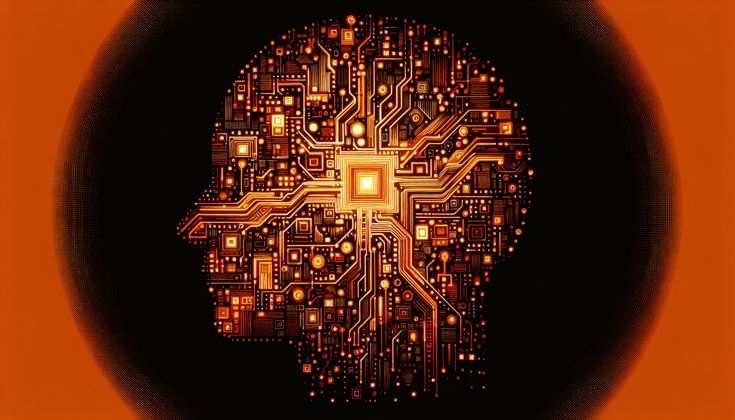
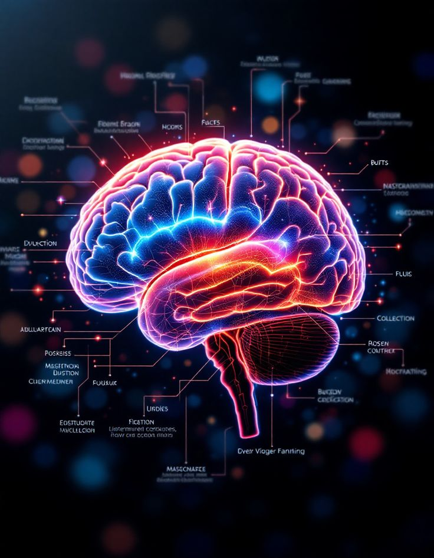
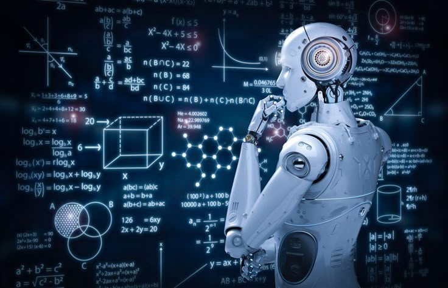
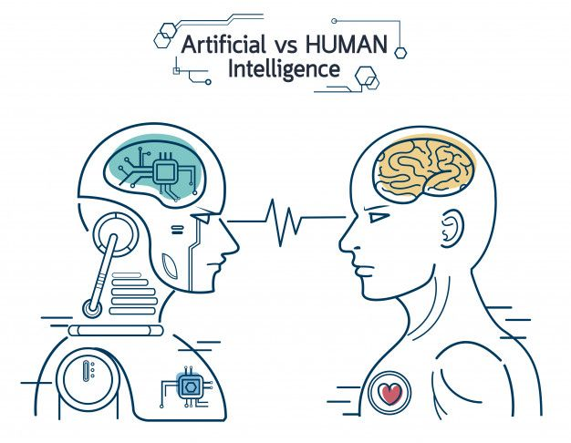
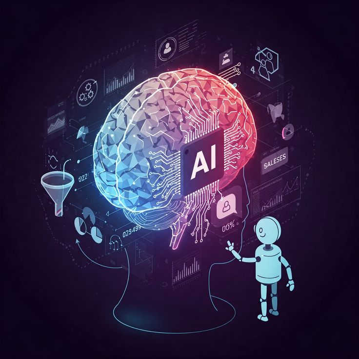

USOS DE INTELIGENCIA ARTIFICIAL
El desarrollo actual y el que se espera en el futuro de la inteligencia artificial, va a ser beneficioso para el día a día o la resolución de toda índole en todos los ámbitos de la vida.
Pero, aparte de lo más evidente en nuestras vidas como ordenadores, smartphones y demás dispositivos con IA que todos los días utilizamos a menudo y que ya forman parte de nuestra cotidianidad, existen otros ámbitos donde también se usa, son menos conocidos o no habías pensado en ellos. Aun así, todos tiene su parte importancia en un mundo tan globalizado.
Lingüística computacional :
1. Procesamiento de lenguaje natural (NLP): La IA se utiliza para desarrollar sistemas de NLP que pueden analizar, interpretar y generar lenguaje natural.
2. Análisis de sentimiento: La IA se utiliza para analizar el sentimiento y la opinión expresados en textos, como reseñas de productos o comentarios en redes sociales.
3. Traducción automática: La IA se utiliza para desarrollar sistemas de traducción automática que pueden traducir textos de un idioma a otro.
4. Reconocimiento de voz: La IA se utiliza para desarrollar sistemas de reconocimiento de voz que pueden transcribir la voz humana en texto.
5. Generación de texto: La IA se utiliza para desarrollar sistemas que pueden generar texto automáticamente, como resúmenes de artículos o respuestas a preguntas.
6. Chatbots y asistentes virtuales: La IA se utiliza para desarrollar chatbots y asistentes virtuales que pueden interactuar con los usuarios de manera natural.
7. Análisis de texto: La IA se utiliza para analizar textos y extraer información relevante, como entidades, relaciones y conceptos.
Minería de datos (Data Mining) :
1. Análisis predictivo: La IA se utiliza para desarrollar modelos predictivos que pueden anticipar comportamientos y tendencias en los datos.
2. Clasificación y clustering: La IA se utiliza para clasificar y agrupar datos en categorías y patrones significativos.
3. Análisis de asociación: La IA se utiliza para identificar relaciones y patrones entre variables y atributos en los datos.
4. Análisis de series temporales: La IA se utiliza para analizar y predecir patrones en series temporales, como la demanda de productos o la evolución de precios.
5. Detección de anomalías: La IA se utiliza para detectar patrones y comportamientos anormales en los datos, como fraude o errores.
Industria :
1. Automatización de procesos: La IA puede ser utilizada para automatizar procesos industriales, como la inspección de productos, la detección de fallas y la optimización de la producción.
2. Análisis de datos: La IA puede ser utilizada para analizar grandes cantidades de datos industriales, como sensores, máquinas y sistemas de control, para identificar patrones y tendencias.
3. Predicción y mantenimiento: La IA puede ser utilizada para predecir y prevenir fallas en máquinas y equipos, lo que puede reducir el tiempo de inactividad y mejorar la eficiencia.
4. Optimización de la producción: La IA puede ser utilizada para optimizar la producción, como la planificación de la producción, la gestión de inventarios y la logística.
5. Seguridad y vigilancia: La IA puede ser utilizada para mejorar la seguridad y la vigilancia en las instalaciones industriales, como la detección de intrusos y la prevención de accidentes.
6. Desarrollo de productos: La IA puede ser utilizada para desarrollar productos nuevos y mejorados, como la creación de prototipos y la simulación de comportamientos.
7. >Gestión de la cadena de suministro: La IA puede ser utilizada para gestionar la cadena de suministro, como la predicción de la demanda y la optimización de la logística.
Medicina :
1. Diagnóstico asistido por computadora: La IA puede ayudar a los médicos a diagnosticar enfermedades más precisamente y rápidamente, mediante el análisis de imágenes médicas y datos clínicos.
2. Análisis de datos clínicos: La IA puede ayudar a analizar grandes cantidades de datos clínicos, identificar patrones y tendencias, y proporcionar información valiosa para la toma de decisiones médicas.
3. Desarrollo de planes de tratamiento personalizados: La IA puede ayudar a desarrollar planes de tratamiento personalizados para cada paciente, basados en su perfil genético, historial médico y otros factores.
4. Monitoreo remoto de pacientes: La IA puede ayudar a monitorear a los pacientes de manera remota, mediante el análisis de datos de sensores y dispositivos médicos.
5. Desarrollo de fármacos y terapias: La IA puede ayudar a desarrollar nuevos fármacos y terapias, mediante el análisis de datos de ensayos clínicos y la identificación de patrones y tendencias.
6. Robótica quirúrgica: La IA puede ayudar a controlar robots quirúrgicos, permitiendo procedimientos más precisos y menos invasivos.
7. Análisis de imágenes médicas: La IA puede ayudar a analizar imágenes médicas, como radiografías y resonancias magnéticas, para detectar enfermedades y lesiones.

Mundos virtuales:
1.Creación de personajes y NPCs: La IA se utiliza para crear personajes y NPCs (non-player characters) más realistas y con comportamientos más complejos.
2. Simulación de entornos: La IA se utiliza para simular entornos más realistas, como el clima, la iluminación y la física.
3. Interacción con el usuario: La IA se utiliza para permitir la interacción con el usuario de manera más natural y personalizada, como la reconocimiento de voz y la interpretación de gestos.
4. Generación de contenido: La IA se utiliza para generar contenido de manera automática, como niveles, misiones y objetos.
5. Análisis de comportamiento: La IA se utiliza para analizar el comportamiento del usuario y ajustar la experiencia de juego en consecuencia.
6. Creación de mundos virtuales dinámicos: La IA se utiliza para crear mundos virtuales dinámicos que cambian y evolucionan con el tiempo.

Procesamiento de lenguaje natural (Natural Language Processing) :
1. Análisis de sentimiento: La IA se utiliza para analizar el sentimiento y la opinión expresados en textos, como reseñas de productos o comentarios en redes sociales.
2. Reconocimiento de voz: La IA se utiliza para reconocer y transcribir la voz humana, permitiendo la interacción con dispositivos y sistemas de manera más natural.
3. Traducción automática: La IA se utiliza para traducir textos y documentos de un idioma a otro, permitiendo la comunicación entre personas que hablan diferentes idiomas.
4. Generación de texto: La IA se utiliza para generar texto automáticamente, como respuestas a preguntas o resúmenes de artículos.
5. Clasificación de texto: La IA se utiliza para clasificar textos en categorías específicas, como spam o no spam, o para identificar el tema o la intención de un texto.
6. Análisis de entidades: La IA se utiliza para identificar y extraer entidades específicas de textos, como nombres de personas, lugares o organizaciones.
7. Resumen de texto: La IA se utiliza para resumir textos largos y extraer la información más importante.

Robótica :
1. Control y navegación: La IA se utiliza para controlar y navegar a los robots en entornos complejos y dinámicos.
2. Reconocimiento de patrones: La IA se utiliza para reconocer patrones y objetos en el entorno, lo que permite a los robots interactuar con su entorno de manera más efectiva.
3. Aprendizaje y adaptación: La IA se utiliza para permitir a los robots aprender y adaptarse a nuevas situaciones y entornos.
4. Interacción con humanos: La IA se utiliza para permitir a los robots interactuar con humanos de manera más natural y efectiva.
5. Autonomía: La IA se utiliza para permitir a los robots operar de manera autónoma, sin la necesidad de intervención humana constante.

Sistemas de control :
1. Control de procesos: La IA se utiliza para controlar y optimizar procesos industriales, como la producción de energía, la refinación de petróleo y la fabricación de productos químicos.
2. Sistemas de control de tráfico: La IA se utiliza para optimizar el flujo de tráfico y reducir los congestionamientos en las carreteras y autopistas.
3. Sistemas de control de edificios: La IA se utiliza para controlar y optimizar los sistemas de climatización, iluminación y seguridad en los edificios.
4. Sistemas de control de robots: La IA se utiliza para controlar y coordinar el movimiento de robots en entornos industriales y de servicio.
5. Sistemas de control de redes: La IA se utiliza para controlar y optimizar el tráfico de redes de comunicaciones, como Internet y las redes de área local.
Sistemas de apoyo a la decisión :
1. Análisis de datos: La IA se utiliza para analizar grandes cantidades de datos y proporcionar información valiosa para la toma de decisiones.
2. Modelado de procesos: La IA se utiliza para modelar procesos complejos y simular diferentes escenarios, lo que permite evaluar las consecuencias de diferentes decisiones.
3. Optimización de decisiones: La IA se utiliza para optimizar decisiones, identificando las opciones más rentables y eficientes.
4. Predicción de resultados: La IA se utiliza para predecir resultados, identificando patrones y tendencias en los datos.
5. Recomendaciones: La IA se utiliza para proporcionar recomendaciones personalizadas, basadas en el análisis de datos y la evaluación de opciones.

Videojuegos :
1. Personajes no jugables (NPCs): La IA se utiliza para crear NPCs más realistas y con comportamientos más complejos.
2. Enemigos y oponentes: La IA se utiliza para crear enemigos y oponentes más desafiantes y con comportamientos más inteligentes.
3. Navegación y pathfinding: La IA se utiliza para permitir que los personajes y objetos se muevan de manera más realista y eficiente en el entorno del juego.
4. Simulación de física y dinámica: La IA se utiliza para simular la física y la dinámica de los objetos y personajes en el juego.
5. Análisis de comportamiento del jugador: La IA se utiliza para analizar el comportamiento del jugador y ajustar la dificultad y la experiencia del juego en consecuencia.
6. Generación de contenido: La IA se utiliza para generar contenido, como niveles, misiones y objetos, de manera automática.
7. Interacción con el jugador: La IA se utiliza para permitir que los personajes y objetos interactúen con el jugador de manera más natural y realista.

Prototipos informáticos :
1. Simulación y modelado: La IA se utiliza para simular y modelar comportamientos y procesos complejos, lo que permite evaluar y mejorar el diseño del prototipo.
2. Análisis de datos: La IA se utiliza para analizar grandes cantidades de datos y proporcionar información valiosa para la toma de decisiones en el diseño del prototipo.
3. Interacción con el usuario: La IA se utiliza para crear interfaces de usuario más interactivas y personalizadas, lo que permite mejorar la experiencia del usuario con el prototipo.
4. Optimización y mejora: La IA se utiliza para optimizar y mejorar el rendimiento del prototipo, identificando áreas de mejora y proponiendo soluciones.
5. Creación de prototipos virtuales: La IA se utiliza para crear prototipos virtuales, lo que permite evaluar y probar el diseño del prototipo de manera más rápida y económica.
Análisis de sistemas dinámicos :
1. Modelado y simulación: La IA se utiliza para crear modelos y simular el comportamiento de sistemas dinámicos, como sistemas físicos, biológicos y económicos.
2. Análisis de datos: La IA se utiliza para analizar grandes cantidades de datos generados por sistemas dinámicos, identificando patrones y tendencias que no serían visibles para el ojo humano.
3. Predicción y pronóstico: La IA se utiliza para predecir el comportamiento futuro de sistemas dinámicos, permitiendo la toma de decisiones informadas y la optimización de los sistemas.
4. Control y optimización: La IA se utiliza para controlar y optimizar sistemas dinámicos, ajustando parámetros y variables para lograr un comportamiento óptimo.
5. Detección de anomalías: La IA se utiliza para detectar anomalías y comportamientos inusuales en sistemas dinámicos, permitiendo la identificación de problemas y la toma de medidas correctivas.
Simulación de multitudes:
1. Modelado de comportamiento humano: La IA se utiliza para modelar el comportamiento humano en entornos de multitudes, como la forma en que las personas se mueven y interactúan entre sí.
2. Simulación de escenarios: La IA se utiliza para simular diferentes escenarios de multitudes, como la evacuación de un edificio o la respuesta a una emergencia.
3. Análisis de datos: La IA se utiliza para analizar datos de simulaciones de multitudes y proporcionar información valiosa para la planificación y la toma de decisiones.
4. Optimización de diseños: La IA se utiliza para optimizar diseños de espacios públicos y privados, como estadios, aeropuertos y centros comerciales, para mejorar la seguridad y la eficiencia.
5.Entrenamiento y educación: La IA se utiliza para entrenar y educar a los profesionales de la seguridad y la emergencia en la respuesta a situaciones de multitudes.
Sistemas Operativos :
1. Gestión de recursos: La IA se utiliza para gestionar los recursos del sistema, como la memoria, el procesador y el almacenamiento, de manera más eficiente.
2. Seguridad: La IA se utiliza para detectar y prevenir amenazas de seguridad, como malware y ataques de phishing.
3.Interfaz de usuario: La IA se utiliza para crear interfaces de usuario más personalizadas y fáciles de usar, como asistentes virtuales y sistemas de recomendación.
4. Gestión de energía: La IA se utiliza para gestionar el consumo de energía del sistema, reduciendo el desperdicio y prolongando la vida útil de la batería.
5. Actualizaciones y mantenimiento: La IA se utiliza para automatizar las actualizaciones y el mantenimiento del sistema, reduciendo el tiempo y el esfuerzo requeridos.
6. Análisis de datos: La IA se utiliza para analizar los datos del sistema, identificando patrones y tendencias que pueden ayudar a mejorar el rendimiento y la seguridad.
7.Personalización: La IA se utiliza para personalizar el sistema según las preferencias y el comportamiento del usuario.